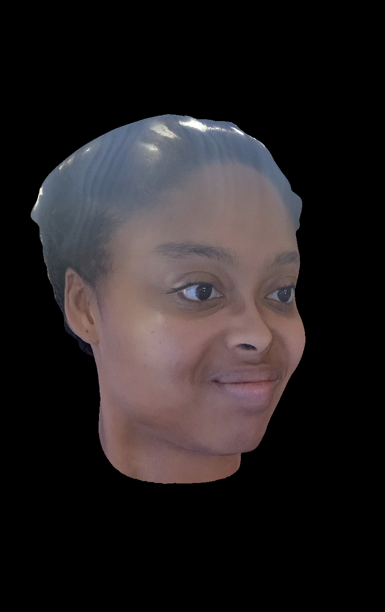
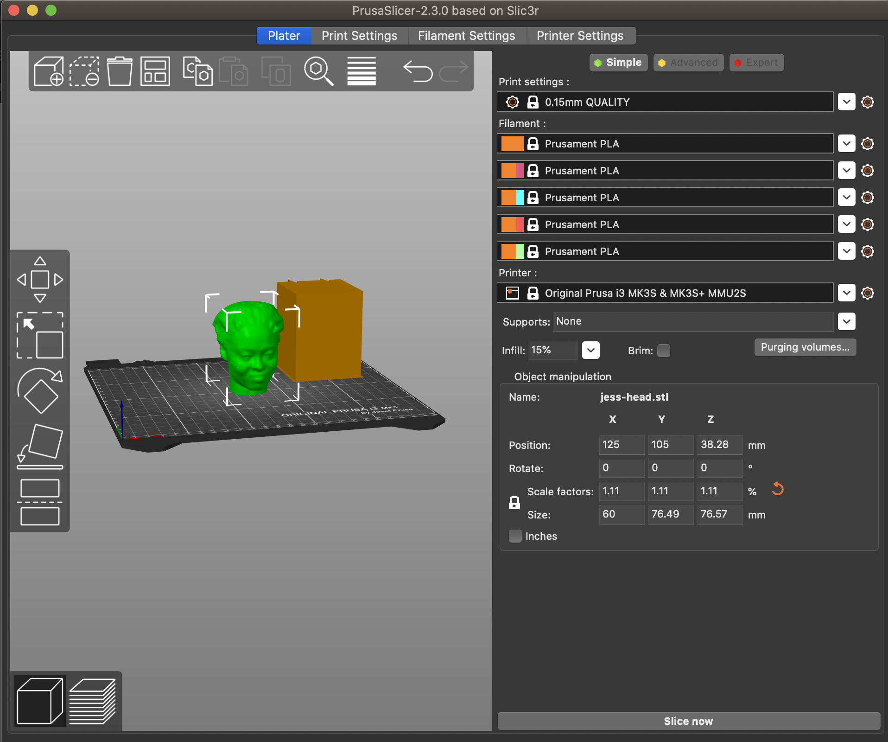
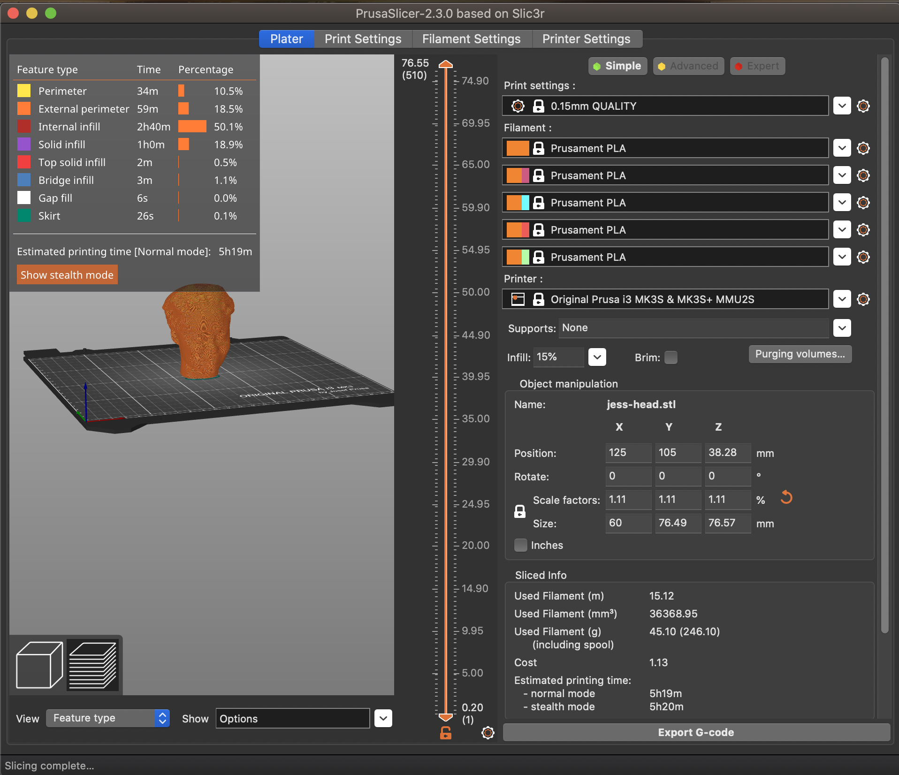

This week we worked on 3D Modeling and Printing! I designed my head and imported it into PrusaSlicer to be printed, and I started designing a component for my final project.
Scanning My Head
Using the Bellus 3D app to scan my head, I took a full head scan of my head (I accidentally only scanned my head and neck at first but switched it to my full head to get a print of my entire head).
Here is the resulting head scan:
For $1, I was able to easily export the scan as an STL file. I set the mesh resolution to SD, export orientation to Z axis up, and mesh smoothness to 1. Click here to download the original STL file based on the initial export from the app or here to see the model in action.
Considering the pros and cons of 3D printing this object rather than using other fabrication methods, I think that printing the head could not have been made as easily with subtractive methods because of the detail in the face; there are no components that could have been easily made by a laser cutter or a CNC machine. If there were components that could have easily been sliced out of the head, then I think other methods may have been better, but due to the curves and 3D nature of this print, I think 3D printing is worth the additional time and material required.
Preparing My Head for Printing
I used PrusaSlicer to prepare my file for printing and configured it for the MK3S model printer. The original STL that Bellus 3D exported was too big, so PrusaSlicer scaled it accordingly. I was also able to scale it more so I changed the X axis length to 60mm, and the software scaled it so that the head was 60mm by 76.49mm by 76.57mm.
I clicked "Slice Now" and saw the following page with all of the sliced info:
I clicked "Export G-code" which resulted in the this G-code file.
Creating a 3D Model for My Final Project
This week, I also started working more on a model for my final project. My current plan is to make a geometric centerpiece and to program a light show within the design. I may potentially also add a sound sensor that changes the lights based on sounds being played. Here is some inspiration for my final project!
I started working on some sketches and inital thougths for what I wanted my design to look like and how I planned on adding the Arduino and additional components to the design. Where will I fit the Arduino? How many components will I need to create a light show and what are their dimensions?

I found this link about asking how to make geometric 3D shapes in Fusion, so I figured I would try to explore this more and build my design off of that. I also did some preliminary measurements and found that 80mm for each side would be a good place to start. I used parametric modeling just in case I want to change the dimensions later.
This is what I designed using the helpful tutorial on the forum! I plan to add more to this design soon, including adding nice designs on the sides with holes for the lights to shine through as well as adding space for all of my components to fit and be able to be hidden within the centerpiece.